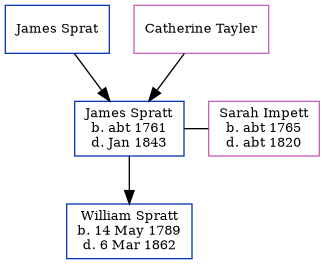

James Spratt c1761 - 1843
[ Home ] | [ Calendar ] | [ Surnames Index ] | [ Errors ] | [ Family History ]The child of James Sprat and Catherine Tayler, James Spratt, the 4 times great-grandfather of Nigel Horne, was born in Kent, England c. 17611, was baptised in St Lawrence, Thanet, Kent, England on 19 Jul 1761 and married Sarah Impett (with whom he had 1 child, William) in St Mary Magdalene, Monkton, Kent on 15 Oct 17863 (www.fadedgenes.co.uk). On 6 Jun 1841, he was living at Barnshill, Staple, Kent4.
He died in Jan 1843 in Eastry, Kent, England2 and was buried in Staple, Kent, England on 22 Jan 1843.
Parents
Children
- William was born on 14 May 1789
Citations
- 1841 England Census Online publication - Provo, UT, USA: The Generations Network, Inc., 2006.Original data - Census Returns of England and Wales, 1841. Kew, Surrey, England: The National Archives of the UK (TNA): Public Record Office (PRO), 1841. Data imaged from the National
- England & Wales, FreeBMD Death Index: 1837-1915 Online publication - Provo, UT, USA: The Generations Network, Inc., 2006.Original data - General Register Office. England and Wales Civil Registration Indexes. London, England: General Register Office. © Crown copyright. Published by permission of the Cont
- Familysearch.org (www.familysearch.org)
- 1841 England, Wales & Scotland Census - Findmypast (was age 84)
Media
England & Wales deaths 1837-2007 - BMD/D/1843/1/AZ/000745/078
Kent, Canterbury Archdeaconry burials 1538-1988 - GBPRS/CANT/D/95449850
1841 England, Wales & Scotland Census - GBC/1841/0013980539
Family Tree
Map
Generated by ged2site. Last updated on Jul 3, 2024
Known Issues
Surname is different from both parents
Burial date (22 Jan 1843) has no citations